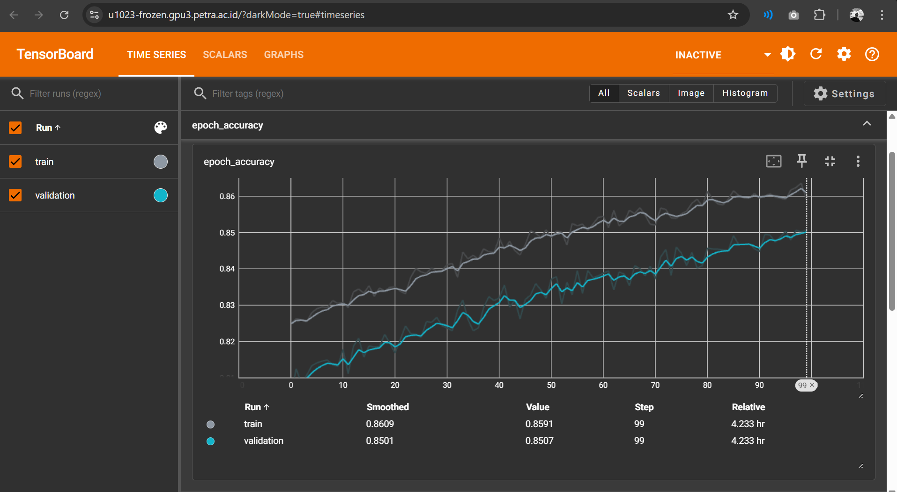
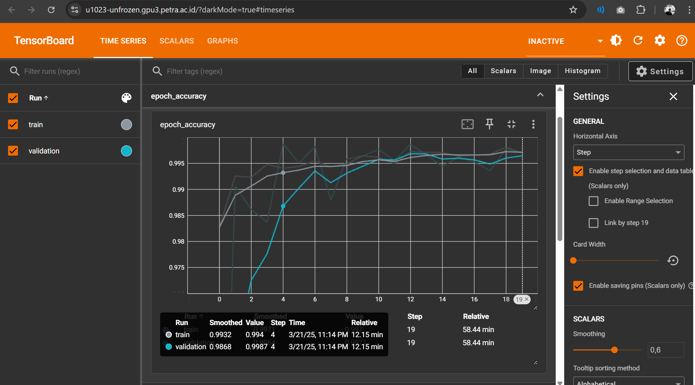
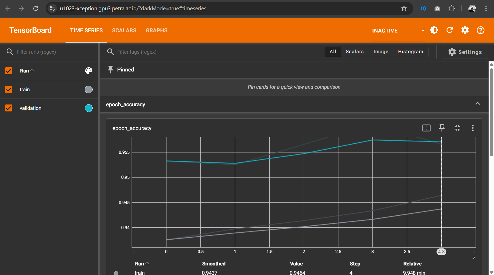

003 : Gallery Cleaner
An app that groups images in a folder using transfer learned ResNet-50 model image classifier.
Overview
Managing an overcrowded gallery folder can be exhausting, especially when sorting through numerous unwanted photos. Consider this scenario:
"Mr. Joni, a businessman, frequently communicates with customers via WhatsApp, regularly exchanging both digital or printed bank payment receipts. Over time, these receipts have accumulated significantly, consuming his storage space. Payment receipts from three years ago are no longer relevant, yet Mr. Joni must now navigate through thousands of images in his "WhatsApp Image" folder to clear space."
Gallery Cleaner addresses challenges like Mr. Joni's by intelligently categorizing images within a folder into five distinct categories:
receiptscreenshotpeoplefoodlandscape
Technology Stack
The Training
The training process is done inside my campus' (Petra Christian University) accelerator. We call the server "gpu3". The server is powered by AMD Instinct MI120, a powerful GPU. Although it is strong, the AMD GPUs require additional configuration to work with TensorFlow. This is where  comes into play. I had to install ROCm and document the process, since TensorFlow had never been used before on this server. I faced many problems related to version dependencies. In the end, I contributed to the campus server by publishing the documentation, so that other students can use TensorFlow with the GPU in the server.
comes into play. I had to install ROCm and document the process, since TensorFlow had never been used before on this server. I faced many problems related to version dependencies. In the end, I contributed to the campus server by publishing the documentation, so that other students can use TensorFlow with the GPU in the server.
Data Preparation
First, I prepared the datasets for each of the 5 classes. I searched through Kaggle and took around 7 different dataset resources. Next, I downloaded it with Kaggle API. The accumulated datasets consist of around 20.000 images for all 5 classes. The data are further splitted into train and validation datasets with 1:9 ratio.Model Declaration
As mentioned before, the system uses unfrozen transfer-learned Resnet50. I decided to use Resnet-50 since is a widely used model, and the unfrozen transfer-learned type achieves highest accuracy. But, before I reached the conclusion, I have experimented 2 different model type:-
Resnet50 from Scratch
This approach adopts only the ResNet-50 architecture with randomly initialized weights rather than pre-trained values. As expected, this model required significantly more training time to converge and struggled to reach high accuracy, ultimately achieving only about 75% validation accuracy. I realized that I needed another approach, this is when I met the transfer learning method.
-
Transfer-learned Frozen Resnet50
I discovered that I could leverage a pre-trained ResNet50 model from ImageNet thanks to this excellent Kaggle resource: Cats or Dogs - using CNN with Transfer Learning.
In this implementation, Gabriel Preda successfully trained a model with:
- Frozen pre-trained ResNet50 layers (preserving ImageNet knowledge)
- One unfrozen final layer connected to 2 neurons for cat/dog classification
- Impressive results: ~98% validation accuracy
I adapted this approach to my multi-class problem by:
- Keeping the frozen pre-trained layers
- Adding a final trainable layer connected to 5 neurons (one for each class)
Here are the training results:
The training results show the model avoided overfitting, but couldn't exceed 85% accuracy after 4 hours of training. I later discovered this frozen approach works best with:
- Small datasets
- Few classes (like binary classification)
- Limited computational resources
For my scenario with a large dataset, 5 distinct classes, and access to substantial computing power, freezing most layers was inefficient. The model could only train that single final layer, severely limiting its ability to learn the specific features needed for the classification task. -
Transfer-learned Unfrozen Resnet-50 (Highest Accuracy)
This time, I didnt freeze the pretrained layers. Here is the result:
The test result shows that Transfer-learned Unfrozen Resnet-50 achieve ~99% in less than 1 hour of training. I decided to use this model type.
-
Xception Transfer Learning
I further searched deeper about transfer learning. I feel like the current method is not enough, I suspected that the previous model was overfitting. I found out that Xception is known to be used widely for transfer learning and fine tuning. Here is the result:
I suspected that this model type was overfitting since the validation accuracy surpassed the training accuracy, albeit not significantly (only ~1%). Nevertheless, the model only reached an accuracy of ~95%, although it did so in less than 10 minutes of training. Hence, I decided to use the Transfer-learned Unfrozen Resnet-50 model.
Application
I further apply the model to an application. I used Tkinter for the user interface. I also decided to build an .exe with PyInstaller since this system is more likely to be used locally. I faced a problem here. The application requires Tensorflow library to run. Asking user to install Tensorflow and activate the corresponding virtual environment is not possible. Compiling the whole Tensorflow library inside the .exe is also not efficient. Hence, I decided to use Tensorflow Lite. Here is how the application looks like:
- User is asked to choose a model used for the classification for flexibility,
- User is asked to choose a folder containing image that he/she wants to clean (classify). In this case, the folder shown on the right side of the image. The folder contains images with diverse classes.
- User is asked to choose the image classes/categories he/she wants to extract from the folder. In this case is
peopleandreceipt. - User clicks Start Classification button.
The cleaning process starts. The application moves all the images to folders corresponding to their classes. Later, user can recheck the content of the folders and delete it later.
Here is the result of the cleaning process:The application does well in classifying both classes. Refer to the results below:
Lessons Learned and Notes
From this project, I learned some valuable lessons:
- In order to evaluate a model, I have to really make sure that it is not overfitting.
- I found out that Resnet-50 model is too big and unefficient for this task. In future works, I am going to try smaller and much more efficient such as EfficientNet.
- The final model I trained only excels in classifying receipt and people. The accuracy of the model also drops when it is faced with real gallery images of the users. I suspect that this is because of data imbalance and lack of data variance. The model should be exposed to balanced and diverse datasets. In future works, I will improve the data preparation.